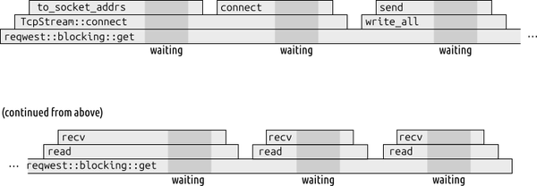
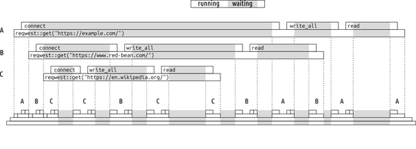

在最后一章中，我们介绍了如何在 Rust 中使用线程将计算密集型任务分配到多个处理器核心上，从而让整个系统发挥最大效能。在这一章以及下一章中，我们将介绍一种替代线程的解决方案，为那些需要大量 I/O 操作的程序提供更高效的并发处理能力。
对于那些依赖 CPU 运算的程序来说，比如我们的 Mandelbrot 示例，性能完全取决于对可用 CPU 时间的高效利用。这个任务需要大量的计算资源，因此其他任何资源都不会有负担。线程在让 CPU 发挥作用方面表现得非常出色。
Rust 的异步代码是一种协作式多任务处理系统，它能够在较低的开销下实现与线程代码相同的功能——有时甚至开销要低得多。在 Rust 中，异步任务相当于 C#中的任务、Go 中的“协程”，或者 Java 中的“虚拟线程”。这些语言的这些特性能够为用户带来更流畅的开发体验，但它们也需要语言运行时提供复杂的支持。相比之下，异步 Rust 在服务器和微控制器上都能很好地运行。
如果没有异步代码，那么每个线程就会一次只执行一项任务。例如，考虑一个单线程程序，该程序调用 reqwest::blocking::get("https://red-bean.com") 来发起 HTTP 请求。图 20-1 展示了该程序运行时函数调用栈的简化视图，从左到右依次展示各个步骤。每个函数调用都是一个方框，位于其调用者之上。显然， get 函数会在整个执行过程中持续运行。它会调用 Rust 标准库中的函数，比如 TcpStream::connect 和 TcpStream 对 write_all 和 read_to_string 的实现。这些函数又会继续调用其他函数，但最终程序会发起系统调用，向操作系统请求执行某些操作，比如打开 TCP 连接，或者读取/写入数据。

当这个函数等待系统调用返回时，它的一个线程会被阻塞起来：在系统调用完成之前，它无法执行任何其他操作。通常，一个线程的栈大小会有数十到数百千字节，因此如果这是一个由多个线程协同工作的大型系统，那么仅线程相关的开销就可能会变得相当昂贵。
异步代码允许一个线程同时执行多个任务。图 20-2 展示了三个异步任务，每个任务都使用异步版本的 reqwest::get 来发起自己的 HTTP 请求。在图的上半部分，我们可以看到每个任务自身的执行情况。每个任务的视图都非常类似于图 20-1。不过，与阻塞式执行方式不同，异步代码的设计使得各个任务可以轮流执行。这种交错式的执行模式在图的下半部分有所体现。

每个请求的处理时间与同步版本时相同。不过，在同步版本中，线程需要等待网络响应的时间会被其他任务所填充。这个图表仍然没有放大效果；在这个线程完全占用一个 CPU 核心之前，仍然可以处理更多的请求。
如果你需要处理计算密集型任务，那么就需要使用线程来利用机器的并行处理能力。不过，在给定的内存和处理器时间限制下，异步代码能够同时处理更多的 I/O 相关任务。这就是为什么 Rust 生态系统中大多数流行的 I/O 相关库都提供了异步接口。但实际上，线程和异步代码通常会结合使用，以处理那些包含交互性和计算密集型任务的负载。
这一章从用户的视角来探讨异步代码的工作原理：如何编写异步代码，如何调用带有异步接口的发布包，以及如何解决常见的问题。下一章将解释异步代码的具体运作机制：代码是如何被暂停、调度和恢复的。了解这些细节对于理解异步代码的行为方式，以及如何将其应用于系统扩展非常重要。不过，在这一章中，我们主要关注如何让代码正常运行。
虽然异步代码在需要处理多个任务的应用中表现得最为出色，但其核心特性在较为简单的情况下也很容易理解。因此，虽然我们在本章后面会介绍一些高并发场景下的代码示例，但本节则通过一个简单的例子来说明异步代码的工作原理。
这里有一个程序，它使用了 reqwest crate 来获取网页内容：
useanyhow::Result;asyncfnmake_request()->Result<String>{leturl="https://rust-lang.org/";letresponse=reqwest::get(url).await?.text().await?;Ok(response)}fnmain()->Result<()>{letruntime=tokio::runtime::Runtime::new()?;letresponse=runtime.block_on(make_request())?;println!("{response}");Ok(())}
这是我们的项目的 Cargo.toml 文件：
[package]name="reqwest-example"version="0.1.0"edition="2024"[dependencies]anyhow="1.0.102"reqwest="0.13.4"tokio={version="1.52.3",features=["full"]}
当我们执行这个操作时，它会将未经处理的响应 HTML 内容输出到标准输出中：
$cargorun-preqwest-exampleFinished `dev` profile [unoptimized + debuginfo] target(s) in 0.31sRunning `target/debug/reqwest-example`<!doctype html><html lang="en-US"><head><meta charset="utf-8"><title>Rust Programming Language</title>...
这个程序的代码看起来与普通 Rust 代码并没有太大区别。而这就是我们的目标：异步代码通常类似于传统的同步 Rust 代码，只是增加了一些机制来实现协作式多任务处理。
异步函数，用 async fn 定义，指的是在等待 I/O 或其他阻塞操作完成期间，其执行可以暂停的函数。在我们的程序中， make_request 就是一个异步函数。它调用了 reqwest::get ，而 reqwest::get 又是由 reqwest 提供的异步函数， reqwest 是一个流行的 HTTP 客户端库。
在异步函数中，我们可以使用 await 表达式来等待异步操作的完成。await 表达式的格式为 .await ，放在我们想要等待的操作后面。（虽然看起来像是访问了一个名为 await 的结构体字段，但实际上 .await 是 Rust 语法中内置的一个后缀运算符。）
make_request 函数使用 await 表达式来等待从 reqwest::get 中获得的结果，然后再根据 reqwest::get 的成功值调用 text 方法。而对 get 和 text 的调用通常需要等待网络响应。当这些调用完成之后，await 表达式会暂停 make_request 的执行，直到再次有进展时才会继续执行。
在任何使用异步代码的程序中，都必须指定运行异步任务的运行时环境。异步运行时相当于 Rust 中的操作系统线程调度器：它维护着一个待执行任务队列，并跟踪那些因 I/O 操作、等待计时器结果或获取互斥锁而陷入阻塞状态的任务。当异步函数调用因“await”表达式而暂停时，由运行时负责在稍后的时间继续执行该任务。
我们的程序使用了 tokio 包的运行时环境。我们首先创建一个 Runtime 值，然后调用其 block_on 方法，以启动一个异步任务来执行 make_request 中的操作。当任务完成后， block_on 会返回 make_request 的结果，然后我们就会打印出这个结果。
除了 Runtime 类型之外， tokio crate 还提供了标准库中 I/O 和同步原语的异步版本，以及许多常用的实用工具。Tokio 是目前使用最广泛的异步支持库，因此你遇到的几乎所有其他库都能与它协同工作。
不过，Tokio 只是一个普通的第三方包而已，它并不属于 Rust 语言的一部分。在实现运行时环境时，并没有要求使用那些内部不稳定或不可移植的 Rust 特性。实际上，下一章将会展示如何自己实现运行时环境的一些核心功能。
像我们这里所做的那样，那些使用异步代码来启动程序的场景几乎都是如此。首先创建一个运行时环境，然后立即使用它来调用某个异步函数，从而完成所有实际的工作。不过这样做会变得很繁琐，因此 Tokio 提供了一个属性宏 #[tokio::main] ，用来封装所有这些繁琐的代码。
#[tokio::main]asyncfnmain()->Result<()>{leturl="https://rust-lang.org/";letresponse=reqwest::get(url).await?.text().await?;println!("{response}");Ok(())}
这相当于我们的原始代码，不过运行时中的操作已经被隐藏起来了。而 main 本身已经变成了一个异步函数，因此它可以自行使用 await 表达式。我们不再需要 make_request 函数了，因为现在 main 可以直接调用 reqwest::get 。Tokio 的接口设计使得你很少需要显式引用运行时环境，所以通常使用 #[tokio::main] 也是可以的。
在第一个 reqwest 示例中，对 block_on 的调用看起来有点奇怪：
runtime.block_on(make_request())
但是， make_request 并不是一个普通的函数：它是一个异步函数。当你调用一个异步函数时，该函数的主体甚至不会开始执行。相反，该函数会立即返回一个“未来值”——一个表示异步调用正在进行的 Rust 值。这个新创建的未来值只记录了调用的参数，但在其执行过程中，该值还保留了足够的空间来存储函数体内所需的任何局部变量和临时变量。将这个未来值传递给 runtime.block_on ，就能促使异步调用完成。一旦调用完成， block_on 就会接收到调用的最终返回值——在这种情况下，就是 HTTP 响应的主体内容。
一旦你明白调用一个异步函数会返回一个未来值，那么你就能更好地理解这样的代码了：
reqwest::get(url).await?
期货本身具有被动价值；在等待它们到来之前，或者将它们传递给某种任务启动函数时，它们并不会采取任何行动。例如，考虑以下程序：
asyncfnannounce(message:&str){println!("{message}");}#[tokio::main]asyncfnmain(){letbonnie=announce("Bonnie");letclyde=announce("Clyde");println!("Starring:");clyde.await;println!("and");bonnie.await;}
这样就能得到以下输出结果：
Starring:ClydeandBonnie
具体来说，一个“未来”指的是实现了标准库接口 Future 的类型。 Future 接口通常并不被直接使用，因为其使用方式较为复杂，因此我们将在下一章中探讨它的定义。目前重要的是，实现 Future 接口的类型可以被用来进行查询，从而让该类型所代表的计算在不会阻塞系统的情况下继续运行。如果计算完成，未来就会返回其最终的结果；否则，未来会保存当前的状态，而中断了进程的操作会通知运行时，以便运行时可以再次查询未来，让计算能够继续下去。
“轮询”这个词通常让人联想到一些效率低下的实现方式，比如频繁的等待操作。但实际上，异步的 Rust 编程方式并非如此。只有在有实际进展时，才会进行轮询操作。
现在是明确一些术语的好时机。虽然称异步函数返回的是一个“未来值”，但实际上这个“未来值”只是通往我们真正关心的那个最终返回值的一个中间步骤。当我们谈论异步函数的“返回值”时，指的是那个最终的值，这一点与普通同步函数是一致的。而当我们确实需要提及“未来值本身”时，我们会使用“调用的未来值”这样的表述，或者采用更明确的表达方式。
异步函数返回的未来的类型都是匿名的，并且每个函数都有自己独特的类型。关于这种类型，我们只能说它实现了 Future 特征。这类似于 Rust 处理闭包的方式：每个闭包都有自己匿名的、独特的类型，这些类型实现了 Fn 、 FnMut 和 FnOnce 特征中的一部分。就像闭包特征一样， Future 特征也有一个相关的类型 Output ，用来表示未来最终值的类型。
由于异步函数的未来类型都是匿名的，因此如果你想要编写一个接受这种未来类型的函数作为参数，你就必须为其提供一个通用的类型，然后让类型推断来处理其余的细节。
asyncfncredits(star:implFuture<Output=()>,costar:implFuture<Output=()>,){println!("Starring:");star.await;println!("and");costar.await;}
这个函数允许 star 和 costar 使用任何实现了 Future 的类型，只要它们的返回类型符合 () 的要求。因为 credits 只是关注它们的副作用，并不期望它们返回有趣的值。
你可以这样返回一个函数的未来值：
fnstar(star_index:usize)->implFuture<Output=()>{letname=matchstar_index{0=>"Bonnie",1=>"Clyde",2=>"Mephistopheles",_=>"some minor character",};announce(name)}
请注意， star 并非 async fn 类型：它只是一个普通的同步函数，只不过这个函数的返回值是一个未来值。而这个未来值是由调用异步函数 announce 时产生的。由于我们立即返回了这个未来值，因此 announce 函数的主体部分在这里并不会执行。
我们可以这样使用 credits 和 star ：
#[tokio::main]asyncfnmain(){letbonnie=star(0);letclyde=star(1);credits(bonnie,clyde).await;}
除了异步函数之外，Rust 还提供了 async 块。 async 块的值是一个未来值。
letmy_future=async{println!("Starring:");bonnie.await;println!("and");clyde.await;};
async 块体内的代码并不会立即执行。相反， async 块会创建一个未来执行机制，当该机制被触发时，才会执行该代码。就像闭包一样， async 也能捕获来自周围代码的变量。你甚至可以使用 async move { ... } 来强制该块拥有对所引用变量的控制权，就像在闭包前面使用 move 一样。
这为我们提供了一种将任何异步函数重写为同步函数的方法，而该同步函数恰好会返回一个未来对象：
fncredits(star:implFuture<Output=()>,costar:implFuture<Output=()>,)->implFuture<Output=()>{async{println!("Starring:");star.await;println!("and");costar.await;}}
这个版本的 credits 使用了不同的语法，但可以达到与原始定义相同的效果。调用者无法区分两者之间的区别。不过，这个版本是一个同步函数，它返回的是 async 块的未来值。（我们可以写成 async move { ... } ，但 Rust 可以从 await 表达式中推断出 star 和 costar 必须通过移动来捕获，因此不需要这样做。）
看起来一切都很不错。不过为了简单起见，我们省略了一些在现实世界代码中需要处理的细节。还记得 announce 的定义吗：
asyncfnannounce(message:&str){println!("{message}");}
像其他异步函数一样，这个函数也不会立即使用其参数。而是会返回一个未来值，之后才会使用这些参数。由于这个未来值包含 message 的值，因此它不能持续到 message 所借用到的 str 之后。例如，以下这种用法是不合适的：
letfuture={letcredits=format!("{star} and {costar}");announce(&credits)};future.await;
由 announce 生成的未来指针指向了 credits ，但是 credits 在块的末尾就超出了作用域范围，因此 String 所持有的指针在那一刻被丢弃了。当我们尝试在块之外使用这个未来指针时，Rust 语言会遇到一些问题：
error: `credits` does not live long enough|8 | let future = {| ------ borrow later stored here9 | let credits = format!("{star} and {costar}");| ------- binding `credits` declared here10 | announce(&credits)| ^^^^^^^^ borrowed value does not live long enough11 | };| - `credits` dropped here while still borrowed
作为一种练习，如果我们把 announce 重新写成一个同步函数，并包含一个 async 块，那么就能更清楚地了解其中的运作机制了。
fnannounce(message:&str)->implFuture<Output=()>{asyncmove{println!("{message}");}}
这返回一个未来值，该值包含了对引用 message 的副本，而 perforce 则继承了该副本的生命周期。如果我们完全列出类型签名中所有的值的生命周期，就会呈现如下样子：
fnannounce<'m>(message:&'mstr)->implFuture<Output=()>+'m
其含义并未改变。返回类型中额外的绑定 + 'm 表明，该结果的生命周期不会超过 message 的生命周期。不过，这在 Rust 语言中属于默认情况。需要注意的是，返回类型中的 impl SomeTrait 表示“某种实现了 SomeTrait 的类型”，但我们并没有明确指出具体是哪种类型。这种类型可能会依赖于函数的通用参数，比如 'm 。
当 Rust 的默认行为不符合我们的需求时，我们可以明确指定生命周期约束。下面这个版本的 announce 会复制其参数，从而能够返回一个 'static 类型的未来值。
fncopying_announce(message:&str)->implFuture<Output=()>+'static{letowned_message=message.to_string();asyncmove{println!("{owned_message}");}}
这个被绑定了的 + 'static 变量代表了我们的目标：未来的类型应该是“只要 'static 存在，它就能持续存在”。也就是说，这种类型本身并没有寿命限制，因此调用者可以随心所欲地保留这个未来。我们通过使用 to_string 来将 &str 转换为 String 类型，然后利用 async move 来确保这个未来能够拥有 String 的所有权。
这些例子已经有些陈规了，为了使得解释更加集中，在下一节中，我们将介绍一个更完善的、更现实的例子，并展示异步代码如何帮助管理高度并发的代码。
在基础部分讲解完毕后，我们现在可以开始应用异步 Rust 了。通过异步处理，我们可以运行高度并发的代码，同时不会浪费资源。
这是我们将要使用的 Cargo.toml 文件：
[package]name="spider"version="0.1.0"edition="2024"[dependencies]anyhow="1.0.102"reqwest="0.13.4"tokio={version="1.52.3",features=["full"]}netiquette="0.1"scraper="0.27.0"
我们之前已经提到过这些库。错误处理库 anyhow 是在第 7 章中引入的。在这一章中，我们一直在使用 tokio 和 reqwest HTTP 客户端。对于新加入的库 netiquette ，我们将用它来优雅地爬取网页，同时限制每个域名每秒只能有一个请求；而 scraper 则用于解析 HTML 文档。
首先，我们来处理一些辅助代码。以下函数会获取一个网页，找出其中的链接，并将这些链接作为绝对路径的向量返回给调用者。
usereqwest::{Client,Result,Url};usescraper::{Html,Selector};pubasyncfnpage_links(client:&Client,url:&Url)->Result<Vec<Url>>{letbody=client.get(url.clone()).send().await?.error_for_status()?.text().await?;letdoc=Html::parse_document(&body);letlink_selector=Selector::parse("a[href]").unwrap();Ok(doc.select(&link_selector).flat_map(|a_elem|{lethref=a_elem.attr("href").unwrap();url.join(href)}).collect())}
这个函数的前半部分使用了 reqwest 来从给定的 url 中获取网页数据。如果过程中出现任何问题，将会出现错误。关于 reqwest 的 API 细节我们就不详细讨论了，不过可以指出的是， reqwest::Client 包含一个连接池功能，因此当需要进行多次 HTTP 请求时，使用 Client 会比使用普通的 reqwest::get 函数更为合适。
成功调用 client.get(url.clone()).send() 后会返回 reqwest::Response ，该值代表了服务器返回的 HTTP 响应内容。不过，该响应可能仍在传输过程中。我们通过调用 error_for_status 来检查是否存在 HTTP 错误响应。如果检查成功，我们会调用 text() 来完全接收响应体，并确认其是否为有效的 UTF-8 编码。在可能出现错误的每个环节，我们都使用 ? 操作符来进行异常处理。
请注意， Html::parse_document 并不返回 Result 类型的数据。HTML 标准规定了如何处理 HTML 文档中可能出现的所有解析错误（因为在网络上发现错误的标记其实是很常见的情况）。因此，这段代码中唯一可能出现的问题是来自 url.join(&href) 的错误，而 url.join(&href) 会返回 Result<Url, url::ParseError> 类型的数据。实际上，确实存在所谓的“损坏的 URL”这种情况。不过，我们并没有将这种错误视为致命问题，而是使用了 flat_map 迭代器方法来保留 Ok 类型的数据，同时忽略这些错误。
如果一切顺利， page_links 将会返回一个包含绝对 URL 的向量。
在下一节中，我们将使用 page_links 作为在互联网上并行遍历时的核心组件。不过，如果你想要单独尝试一下，这里有个可能的 main 函数供你使用：
#[tokio::main]asyncfnmain()->anyhow::Result<()>{letSome(url)=std::env::args().nth(1)else{anyhow::bail!("Usage: list-links URL");};leturl=Url::parse(&url)?;letlink_urls=links::page_links(&Client::new(),&url).await?;forlinkinlink_urls{println!("{link}");}Ok(())}
正如我们之前提到的，我们将采用一种简单的策略：为每个网页创建一个任务。这些任务会共享一些资源。以下是用于管理遍历过程的状态变量结构：
usestd::collections::HashSet;usestd::sync::Mutex;usenetiquette::Limiter;usereqwest::Client;/// A traversal of the Internet, starting from a given page.structTraversal{/// HTTP client.client:Client,/// Set of all URLs we have seen so far. Note: `#fragment`s are/// stripped, so that URLs pointing to two sections of the same page/// aren't treated as different pages and fetched twice.seen:Mutex<HashSet<Url>>,/// Self-imposed rate limiter.limiter:Limiter,}
当我们开始遍历时，会创建一个该结构的实例，并为每个异步任务分配一个指向该实例的 Arc 引用计数指针。该结构包含三个字段：
client 是 reqwest 连接池，每次我们需要获取网页内容时，都会使用这个连接池。
seen 包含了我们目前已经访问过的所有页面。如果我们遇到一个指向已存在于 seen 中的页面的链接，我们会认为有其他任务正在负责处理该页面的链接列表的枚举工作，然后我们可以继续前进。
limiter 用于避免由于同时或连续发送大量请求而导致网站过载的情况发生。
由于 Tokio 使用线程池来调度所有处理器核心执行异步任务，因此我们可以认为 Traversal 中的字段可以被多个不同的线程同时访问。这意味着 seen 需要由 Mutex 来保护。虽然 Tokio 定义了自己的 Mutex 类型，但在这里我们不需要使用它；标准库提供的 std::sync::Mutex 就足够了，而且稍微更理想一些。我们将在本章的后面部分讨论这两种类型之间的区别。
要创建一个新的 Traversal 值，我们可以使用 new 函数：
implTraversal{fnnew(client:Client,user_agent:String)->Self{Self{seen:Mutex::new(HashSet::new()),client:client.clone(),limiter:Limiter::new(client,user_agent),}}}
该遍历功能的代码如下所示：
usestd::sync::Arc;usetokio::task::JoinSet;/// Visits all pages reachable from `page` within `depth` links.asyncfnvisit(traversal:Arc<Traversal>,muturl:Url,depth:usize){url.set_fragment(None);if!traversal.seen.lock().unwrap().insert(url.clone()){return;}ifdepth==0{return;}// Rate limiting; and bail out if robots.txt prohibits crawling this URL.letpermit=matchtraversal.limiter.acquire(&url).await{Ok(permit)=>permit,Err(err)=>{eprintln!("Skipping <{url}>: {err}");return;}};// Fetch the document and find links.letlinks=matchlinks::page_links(&traversal.client,&url).await{Ok(links)=>links,Err(err)=>{eprintln!("Error visiting <{url}>: {err}");permit.note_error(&url,err);return;}};drop(permit);// done: allow crawling other URLs on this domain// Crawl web pages linked from this document, recursively.letmutjoin_set=JoinSet::new();forlinkinlinks{spawn_visit(Arc::clone(&traversal),link,depth-1,&mutjoin_set);}join_set.join_all().await;}fnspawn_visit(traversal:Arc<Traversal>,url:Url,depth:usize,join_set:&mutJoinSet<()>,){join_set.spawn(visit(traversal,url,depth));}
我们传递给 visit 一个 URL，同时还会指定希望从该页面向外遍历的链接数量。首先，我们会从 URL 的末尾去除任何多余的字符，这样爬虫就能正确处理指向同一网页不同部分的链接。调用 HashSet::insert 会记录这次遍历已经访问了 url 。幸运的是，如果 insert 返回 false ，说明该页面已经存在于集合中，这意味着其他任务已经访问过这个页面，这种情况下我们的工作就完成了。如果 depth 的值为零，那么我们就不需要继续遍历了；同样，这种情况下我们的工作也完成了。
否则，调用任务会首先到达这一页面，因此有责任枚举出所有的输出链接。我们会调用 page_links 来查找这些链接，如果过程中出现任何错误，我们会记录下错误信息。
请记住，异步任务本质上只是一个由运行时驱动的“未来任务”。这个“未来任务”所需的存储空间只需足够存储每次“等待”操作时的计算状态即可，包括那些位于 page_links 和 reqwest::get 中的操作。在这种情况下，所需的存储空间略高于一千字节。运行时本身也只会产生少量开销。此外，异步任务不需要专门的内核资源。因此，其所需的内存比一个什么都不做的线程要少一个数量级——而我们的异步任务所做的操作其实比什么都不做要多得多：它会打开一个 HTTP 连接，发起请求，并解析 HTTP 响应体。
总之，为每个要访问的网页分别发起一个异步任务是完全可行的。这样就能让我们编写出能够直接反映我们所执行活动自然结构的代码。
该生成循环使用了一种名为“Tokio”的集合，这种集合其实就是一组任务，而 join_all 方法则用于等待所有任务完成。 JoinSet::spawn 会在与调用者相同的运行时环境中启动一个新的异步任务，并将其添加到该集合中。我们使用 Arc::clone 来为每个新任务分配一个独立的 Arc 指针，该指针指向 Traversal 。
理想情况下， spawn_visit 不需要成为一个独立的函数；没有充分的理由使得 visit 不能简单地递归调用以获取一个会访问 link 的未来，然后调用 join_set.spawn 本身。不过，截至本文撰写时，Rust 编译器存在一个漏洞，该漏洞会导致编译器认为 Traversal::visit 的返回值在跨线程传递时是不安全的。通过将对 visit 的递归调用隔离在一个同步函数中，可以解决这个问题。
这里有一个 main 函数可以启动这一切：
#[tokio::main]asyncfnmain()->Result<()>{letSome(url)=std::env::args().nth(1)else{anyhow::bail!("Usage: spider URL");};letstart_url=Url::parse(&url)?;letclient=Client::builder().user_agent(USER_AGENT).build()?;lettraversal=Arc::new(Traversal::new(client,USER_AGENT.to_string()));visit(Arc::clone(&traversal),start_url,2).await;lettraversal=Arc::into_inner(traversal).unwrap();letseen=traversal.seen.into_inner().unwrap();letmutsorted=Vec::from_iter(seen.into_iter());sorted.sort();forpageinsorted{println!("{page}");}Ok(())}
有趣的是，这个函数能够在不锁定任何 Mutex 对象的情况下，显示 Traversal 对象的内容。这是可行的，因为我们知道，每次调用 Traversal::visit 时，都会等待所有派生的任务完成。等到调用返回时， traversal 对象就拥有了对该对象的唯一引用。由于没有其他线程拥有该对象的副本，所以引用计数不会增加，而无需我们干预。 Arc::into_inner 对象会接管 Arc 对象的所有权，验证其引用计数是否为 1，然后以值传递的方式返回其引用对象。我们实际上是从 Traversal 对象中“提取”出 Arc 对象，并完全拥有它的所有权。
对于 Mutex 来说，也有类似的论点：如果某个人拥有 Mutex 的所有权，而不仅仅是对其的引用权限，那么就不应该有其他线程能够访问它。因此，我们可以将 Mutex 从它所保护的数值中解出来，这样我们就完全拥有了 seen 和 errors 表的访问权限。
这个程序可以同时启动数千个任务，但 Tokio 默认只使用少数几个系统线程来运行所有异步代码——每个 CPU 核心对应一个线程。幸运的是，我们的任务在运行过程中只会在某个线程上占用一小部分时间。其余时间，它们都处于等待状态：要么处于 netiquette 状态，等待一个合理的间隔后再与服务器进行通信；要么处于 reqwest 状态，等待网络 I/O 操作完成。
当任务达到第 .await 个阶段且无法立即继续执行时，它会将控制权返回给运行时环境。Tokio 会将这些等待执行的任务暂存起来。如果在程序运行期间能够查看 Tokio 运行时的内部情况，你会看到有少量任务正在系统线程上运行；还有很多任务被暂存起来，等待执行；此外，还有一些任务处于队列中，准备由工作线程来执行。这些处于队列中的任务，通常是那些从网络接收到新数据的任务。（如果你曾经查看过操作系统内部的情况，那么这种情况会让你感到熟悉。异步运行时通常就像一个小规模的操作系统，负责管理程序的任务，就像操作系统管理线程和进程一样。）
在一篇出色的博客文章中，《异步：什么是阻塞？》，Tokio 项目的维护者 Alice Rhyl 写道：
为了了解什么时间才算过多，一个实用的经验法是，每个.await之间的时间间隔不应超过 10 到 100 微秒。不过，这还是取决于你正在编写的应用程序类型。
当 Html::parse_document(body) 运行 100 毫秒时，其执行时间超过了这个经验数值上限的 1000 倍。程序仍然会运行，而且按照设计，不需要 Tokio 保持响应性。但如果我们添加了一个图形化的进度可视化界面，该界面同样在 Tokio 的工作线程中运行，可能会导致画面卡顿。如果再加上基于终端的用户界面，那么对按键操作的响应速度可能会变得缓慢。在实际的网络服务中，这种影响会更加明显：少数几个性能不佳的任务可能会挤占成千上万其他请求的响应时间。
一种部分的解决方案是使用一个带有 tokio::task::spawn_blocking 的阻塞任务。而 page_links 的后半部分可以替换为以下内容：
// Spawn a blocking task (not actually the best fix; see below)leturl=url.clone();tokio::task::spawn_blocking(move||{letdoc=Html::parse_document(&body);letlink_selector=Selector::parse("a[href]").unwrap();Ok(...)}).await.expect("HTML parsing task panicked")
注意， spawn_blocking 作为参数接收了一个非 async 类型的闭包。Tokio 会在独立的线程上执行这个闭包，因此不会干扰 Tokio 的响应能力。 spawn_blocking 返回一个未来值，这样 async 调用者就可以等待该阻塞操作完成。如果任务发生异常，返回的值将是一个错误。
因此，我们应该使用专为执行需要大量处理器的任务而设计的线程池。
usetokio::sync::oneshot;// Spawn a Rayon task (the correct fix)let(sender,receiver)=oneshot::channel();leturl=url.clone();rayon::spawn(move||{letdoc=Html::parse_document(&body);letlinks=...;sender.send(links).unwrap();});Ok(receiver.await.unwrap())
函数 rayon::spawn() 在 Ray 的线程池上执行一个闭包。不过，这个函数不支持将值返回给调用者，因此我们必须自己实现这一功能，使用 Tokio 的 oneshot 通道。就像在前一章中使用的 std::mpsc::channel 和 sync_channel 函数一样， tokio::oneshot::channel() 也返回一个发送者和一个接收者。但是 oneshot 通道设计成只能使用一次。 send 方法以值传递方式接收 self 参数，因此当使用这个通道时，发送者的值就会被消耗掉；而我们不需要调用 receiver.recv() 函数，而是直接使用 receiver.await 来等待值的传递，从而消耗接收者所持有的值。
单帧通道通常能够解决这类小问题。因为接收方是一个未来，而发送方则是一种直接为接收方提供价值的方式，所以可以使用 oneshot::channel() 将任何计算转化为一种未来状态。
这样，我们的蜘蛛程序就完成了。我们需要记住的一点是：在异步程序中，有几种不同类型的工作任务，要获得最佳性能，就需要以不同的方式实现和运行这些任务。
轻量级的 CPU 工作模式，非阻塞式的处理方式仅需占用线程时间的一小部分。该模式采用 async 和 await 作为标识，并在 Tokio 工作池上运行。
使用阻塞系统调用的代码应该运行在 Tokio 阻塞任务环境中。
需要大量使用 CPU 的计算任务应该运行在独立的线程池中，比如 Rayon 线程池。
spawn_blocking 、 rayon::spawn 和 oneshot 频道就像是桥梁，让各种节目能够跨越这些不同的领域。
因此，规则是异步代码必须避免阻塞其运行的线程。这听起来很简单，但实际上这个限制却非常重要。许多常见的 API，比如 std::thread::sleep 和 std::net::TcpStream::connect ，会阻塞调用它们的线程。在异步代码中，我们必须使用相应的异步版本，这些异步版本通常具有相同的功能，只是需要额外的一些 .await 参数而已。
例如，在普通的阻塞代码中暂停一秒钟的效果如下所示：
std::thread::sleep(Duration::from_secs(1));
这要求操作系统暂停调用线程，并在一秒钟后重新激活该线程。
东京则提供了一个类似的、更为简单的异步解决方案：
tokio::time::sleep(Duration::from_secs(1)).await;
表 20-1 列出了标准库中的一些常见功能，以及一些在 Rust 的 async 生态系统中也有对应功能的实用模块。Tokio 模块在 async 版本中也有实现，不过有一些例外情况。
| 主题 | 阻止 API 使用 | 异步 API |
|---|---|---|
| 并发性 | std::thread::spawn |
tokio::spawn, tokio::task::spawn_blocking |
std::thread::scope |
tokio::task::JoinSet（非常粗略的翻译） |
|
rayon::join（同时运行两个关闭操作） |
futures::future::join（同时等待两个未来的结果） |
|
| 时间 | std::thread::sleep |
tokio::time::sleep |
| I/O 操作 | std::net::{TcpStream, ...} |
tokio::net::{TcpStream, ...} |
reqwest::blocking::{get, Client, |
reqwest::{get, Client, |
|
std::net::ToSocketAddrs（域名查询） |
tokio::net::lookup_host |
|
std::io::{Read, Write}（基本的输入/输出特性） |
tokio::io::{AsyncRead, AsyncWrite, |
|
std::fs::{File, ...} |
tokio::fs::{File, ...}（但请参考关于这一点的文本） |
|
| 处理流程/处理步骤 | std::process::Command |
tokio::process::Command |
| 锁定 | std::sync::{Mutex, RwLock, ...} |
tokio::sync::{Mutex, RwLock, ...}（但请参考关于这一点的文本） |
| 频道/渠道 | std::sync::mpsc::sync_channel（队列规模有限） |
tokio::sync::mpsc::channel |
std::sync::mpsc::channel（无限队列大小） |
tokio::sync::mpsc::unbounded_channel |
尽管我们已经发出了许多警告，但在两个案例中，我们仍然建议使用阻塞式 API，而不是表 20-1 中列出的异步 API。
其次， std::sync::Mutex 和 RwLock 这些锁在从未被持有的情况下，其性能优于它们的异步版本。只要竞争环境较低，这种情况就适用于大多数锁。实际上，大多数锁都符合这一特性。
第二个建议有些反直觉，我们花点时间来解释一下。 std 锁和 Tokio 锁之间存在两个主要区别。第一个区别是， std 锁及其所依赖的操作系统原语经过数十年的精心调优，性能非常出色。它们几乎不使用任何内存资源，而通过互斥锁进行无冲突访问只需要几条机器指令即可。另一个区别是，Tokio 的锁是专为 async 代码设计的。Tokio 的 Mutex::lock 方法返回一个未来对象，调用方必须处理这个未来对象；如果有人持有互斥锁，任务会像其他等待任务一样被挂起，但不会阻塞工作线程。而 std 互斥锁会阻塞线程。如果锁长时间无法获得，这将导致严重的性能问题，因此竞争情况成为了决定因素。
无论你的使用场景如何，在 .await 个节点上同时持有 std 锁通常都是错误的做法。这可能会导致其他工作线程陷入阻塞状态，甚至引发死锁。（Clippy 这款 Rust 语言 lint 工具能够检测出这种错误的最常见形式。）
有点奇怪的是， tokio::sync 这个模块的名称竟然是 async 版本的 std::sync 工具集。这两个模块都被命名为 sync ，因为它们提供了“同步原语”——即用于多个任务或线程之间协调和通信的工具。所谓“同步”，其概念可以追溯到 20 世纪 70 年代甚至更早的时期。而“异步 I/O”这一概念，正是 async Rust 语言的基础，其起源则可以追溯到 20 世纪 80 年代。因此，这两个听起来相似但实际上并无关联的概念，在大约 30 年的时间里一直相互竞争，直到最终在 tokio::sync 中相遇。无论如何，说 async 任务需要同步原语并没有什么矛盾——因为它们确实需要进行协调。
让我们来看看 Tokio 的 spawn 函数的类型签名：
// in tokio::taskfnspawn<F>(future:F)->JoinHandle<F::Output>whereF:Future+Send+'static,F::Output:Send+'static,
这与标准库中的线程创建函数相比如何呢？
// in std::threadfnspawn<F,T>(f:F)->JoinHandle<T>whereF:FnOnce()->T+Send+'static,T:Send+'static,
async 版本使用了“未来”而不是“闭包”作为参数，不过其他方面都非常相似。所谓“未来”或“闭包”，必须是 Send 和 'static 类型。这样，在另一个线程上运行时就更加安全了，因为可以等待所需的时间来完成操作。返回类型则必须是 Send 和 'static 类型，这样在 JoinHandle 被连接回来时，就能安全地传递回返回值了。
我们不断强调 async 代码与线程之间的相似之处，因为人们很容易忘记这两种方式的相似性其实非常明显。每当我们在处理异步代码时遇到困难，我们都会反复思考：如果我们使用线程的话会怎样呢？通常的答案是，由于同样的原因，我们仍然会遇到同样的问题，而解决方法也是一样的。
例如，如果你尝试使用` spawn `符号引用一个使用了局部变量的未来，Rust 会发出警告：
lethosts=vec!["example.com","example.org"];tokio::task::spawn(async{// error: async block may outlive the current function, but it// borrows `hosts`, which is owned by the current functionfor&hostin&hosts{letresult=reqwest::get(format!("https://{host}/")).await;...}});
如果你尝试用 std::thread::spawn 来做同样的事情，也会得到类似的错误。不过，解决方法类似：使用 async move 块来将数据移动到新的任务中，而不是借用数据。就像线程一样，任务需要拥有自己的数据。
如果你无法 move 获取该值，因为父任务仍然需要它，那么你必须将其克隆。然后你可以 move 访问克隆后的副本。这是一种非常常见的技术；通常，通往 async move 的那几行代码都是对父任务所拥有的数据进行的局部变量克隆。如果完全复制的成本过高，可以将数据封装在一个 Arc<T> 中，这样就能以较低的成本进行克隆了。（如果这听起来很熟悉，那是因为你在《如何在线程间共享不可变数据》这一章节中注意到了这一点，我们在那篇文档中使用了同样的技巧来解决线程生成问题。）
除了 'static 之外，一个以 Tokio 创建的未来对象必须实现 Send 标记 trait。正如我们在“线程安全：发送和同步”部分所讨论的，实现 Send 功能的类型可以安全地从一个线程转移到另一个线程。当单个任务产生数百个子任务时，Tokio 会将这些子任务分配到其工作线程中。为了实现这一点，这些未来对象必须采用 Send 格式。（Tokio 工作线程还采用工作窃取机制，将任务从一个线程移动到另一个线程以平衡负载。这也需要 Send 功能。）
但是，如何判断一个未来函数是否实现了 Send 功能呢？在第十九章中我们提到，如果一个结构体或枚举类型的所有字段都符合 Send 标准，那么它就实现了 Send 功能。闭包和未来函数也是如此，尽管这些类型的“字段”并没有在代码中明确提及。代码中的每个闭包都拥有自己的自定义类型。如果闭包所捕获的所有值都符合 Send 标准，那么这个类型就为 Send 。
由 async 代码创建的未来具有相同的功能。它们就像拥有私有字段一样，这些私有字段包含了运行所需的所有数据。由 async move 块创建的未来包含了它所捕获的每个变量，就像 move 闭包一样。而通过调用 async fn 创建的未来则包含了所有的函数参数。所有的 async 未来都具有额外的私有字段，用于保存在 .await 各个点上的 async 代码的状态：包括所有作用域中的局部变量，甚至包括在 .await 阶段临时使用的匿名值。如果所有这些值都是 Send ，那么这个未来就被称为 Send 。
这个类型列表在代码中并没有明确说明，因此很容易误触发 Send 限制。例如，下面这段代码看起来似乎没什么问题：
usestd::rc::Rc;asyncfnreluctant()->String{letstring=Rc::new("ref-counted string".to_string());some_asynchronous_thing().await;format!("Your splendid string: {string}")}tokio::spawn(reluctant());
在这种情况下， reluctant 的将来版本必须在 await 之后使用 string ，因此将来版本至少有时会包含 Rc<String> 的值。由于 Rc 指针无法在多个线程之间安全共享，因此 future 本身也不能被设置为 Send 。而 spawn 只接受符合 Send 标准的 future，所以 Rust 对象也适用这一规则。
error: future cannot be sent between threads safely|19 | tokio::spawn(reluctant());| ^^^^^^^^^^^ future returned by `reluctant` is not `Send`|= help: within `impl Future<Output = String>`, the trait `Send` is notimplemented for `Rc<String>`note: future is not `Send` as this value is used across an await|14 | let string = Rc::new("ref-counted string".to_string());| ------ has type `Rc<String>` which is not `Send`...16 | some_asynchronous_thing().await;| ^^^^^ await occurs here, with `string`maybe used laternote: required by a bound in `tokio::spawn`|174 | pub fn spawn<F>(future: F) -> JoinHandle<F::Output>| ----- required by a bound in this function175 | where176 | F: Future + Send + 'static,| ^^^^ required by this bound in `spawn`
这条错误消息比较长，但其中包含了很多有用的信息：
这就解释了为什么未来需要实现 Send ： tokio::spawn 正是为此所必需的。
它说明了哪个值不是 Send ：当地变量 string ，其类型为 Rc<String> 。
这解释了为什么 string 会影响未来：它存在于所指定的 await 范围内。
为了修复这个错误，我们只需要避免在`await`点之后持有 Rc<String> 这个变量。 1
实现这一目标的一种方法是限制非 Send 值的适用范围，使其不会涉及到任何 await 表达式，这样就无需将这类值保存在函数的内部了。
asyncfnreluctant()->String{letreturn_value={letstring=Rc::new("ref-counted string".to_string());format!("Your splendid string: {string}")// The `Rc<String>` goes out of scope here...};// ... and thus is not around when we suspend here.some_asynchronous_thing().await;return_value}
另一种解决方案是直接使用 std::sync::Arc 而不是 Rc 。 Arc 采用原子更新来管理其引用计数，因此 Arc<String> 实际上就是 Send 。
虽然最终你会学会识别并避免那些非 Send 类型的对象，但一开始它们可能会让人感到有些意外。（至少，你的作者们常常对此感到惊讶。）例如，一些较旧的 Rust 代码有时会使用这样的泛型结果类型：
// Not recommended!typeGenericError=Box<dynstd::error::Error>;typeGenericResult<T>=Result<T,GenericError>;
如果你使用更严格的通用错误类型，这个问题就不会出现了。就像我们在“处理多种错误类型”中建议的那样：
typeGenericError=Box<dynstd::error::Error+Send+Sync+'static>;typeGenericResult<T>=Result<T,GenericError>;
对于自己的特性定义，可以通过编写 trait MyTrait: Send { ... } 来避免这种问题。这样，所有实现了该特性的类型都会被强制转换为 Send 的形式。而使用 dyn MyTrait 的代码则无需添加 + Send 。当然，如果需要的话，还可以继续扩展至 trait MyTrait: Send + Sync + 'static 。
你可能想知道，为什么 Rust 允许编写非 Send 代码，而不是不允许运行这些代码！但实际上，是 Tokio 的多线程运行时环境规定了 Send 的要求，而不是 Rust 语言本身。实际上，Tokio 的 Runtime::block_on 方法并不需要使用 Send 未来，因为它并不依赖于 Tokio 的线程池。不过，一般来说，如果你使用 Tokio，那么你使用的几乎所有未来对象都可能需要被 Send 化处理。
关于 async 闭包，其实没什么好说的。它们就是你预期中的那种结构。它们看起来像普通的闭包，只不过前面加了一个 async 关键字。就像 async fn 一样， async 闭包则返回一个未来对象。
// spawn a task per userlettasks=users.into_iter().map(async|user|{add_to_group(user,group).await}).collect::<JoinSet<_>>();letresults=tasks.join_all().await;
就像普通的迭代器通常与特定的操作一起使用一样，异步迭代器也常与异步流一起使用。 futures 这个库提供了 Stream 和 StreamExt 这两个特性。这些特性与 Iterator 类似，但它们能够异步地处理数据：流中的 next 方法实际上就是一个 async 方法。 StreamExt 还提供了许多熟悉的方法（如 map 、 filter 、 fold 、 collect 等），其中许多方法接受异步迭代器作为参数。不过， StreamExt 还包含一些非常棒的功能，这些功能可以超越普通迭代器的能力，实现并发处理。例如， StreamExt::for_each 可以将异步迭代器应用于流中的每个元素，一次处理一个；而 StreamExt::for_each_concurrent 则可以在指定的限制范围内同时处理多个元素。
// Rolling reboot of a set of servers, 8 at a timefutures::stream::iter(&servers).for_each_concurrent(8,async|server|{server.reboot_and_wait_until_started().await;}).await;
这个例子使用了 futures::stream::iter 从一个普通的迭代器中创建一个流。然后，它使用 for_each_concurrent 对每个值执行异步调用，最多可以同时执行 8 次异步调用。
类似于 Fn 、 FnMut 和 FnOnce ，异步闭包也有三个内置特性： AsyncFn 、 AsyncFnMut 和 AsyncFnOnce 。这些特性适用于所有可以调用并返回未来的对象；比如 async fn 类型的闭包和 async 类型的闭包当然属于这种情况。此外，那些返回未来的常规闭包和函数也符合这些特性，比如本章前面提到的 announce 和 copying_announce 示例。
不幸的是， AsyncFn 这些特性并不保证能带来 Send + 'static 预期的结果。这意味着在通用代码中使用闭包与 tokio::spawn 配合使用时，可能会引发问题：
asyncfnkick_off_task<F>(closure:F)whereF:AsyncFn()+Send+'static,{tokio::spawn(asyncmove{...closure().await;// error: awaits a future which is not Send...});}
我们该如何解决这个问题呢？我们需要规定未来的类型——不仅仅是 F 这种封闭类型，还有它返回的类型——必须是 Send + 'static 。
确实可以编写这样的函数签名，但不要使用 AsyncFn() 。相反，应该使用 trait Fn() -> Fut 。这样就能明确指定未来的类型了。
fnkick_off_task<F,Fut>(closure:F)whereF:Fn()->Fut+Send+'static,Fut:Future<Output=()>+Send+'static,
当我们已经在代码中为“未来类型”指定了一个名称 Fut 之后，我们就可以轻松地描述出满足 tokio::spawn 要求的细节，这些描述将被用于函数的 where 条款中。
这些特性可以包括 async 函数，但默认情况下，这些函数无法在 Tokio 的多线程运行时环境中运行。目前没有一种符合编程习惯的方式来声明一种 async fn 类型签名，使得该签名能够明确表示“该函数必须返回一个类型为 Send 的未来对象”。
两个解决方案可以解决这个问题：
trait-variant 这个模块提供了一个名为 #[trait_variant::make] 的属性，你可以将其应用于某个类以声明该类的 Send “变体”。这个变体与原始版本类似，但是其中的 async fn 被修改为返回 Send 未来值。
async-trait 这个模块提供了自己的属性 #[async_trait::async_trait] 。这也会重新定义你的 async fn 签名，而且这种方式还能让你的 trait dyn 与其他的 trait 相互兼容。
Future 特性本身是与 dyn 兼容的，因此你可以声明被装箱化的 dyn 未来类型。这类似于我们之前提到的闭包和错误类型的情况。
typeBoxedFuture<T>=Box<dynFuture<Output=T>+Send>;
async-trait 这个模块的工作方式是将所有方法的类型签名转换为返回带盒化的未来值。虽然这样做会在查询未来值时产生一些额外的开销，但这是为了让 async 方法与 dyn 方法保持兼容性而不得不采取的办法。
没有任何方法可以安全地终止一个线程。因为无法准确知道该线程正在做什么：它可能在持有锁、陷入 panic 状态、在销毁大型数据结构时出现问题，甚至可能在执行非 Rust 代码，比如系统库。但是， async 代码设计为在 .await 时间点频繁触发中断，每次触发时，其所有变量和局部状态都会被妥善保存起来。因此， async 代码可以被安全地取消。
这种功能有多种用途：
成功杀死了其中一个正在运行的任务（ tokio::task::JoinHandle::abort 和 JoinSet::abort_all ）；
无论如何，都不要对任何未来的操作使用超时机制 ( tokio::time::timeout )；
持续进行任意数量的期货交易，直到我们决定取消它们为止（ tokio_util::sync::CancellationToken::run_until_cancelled ）；
让多个未来事件同时发生，优先处理最先准备好的那个事件，然后取消其他事件的执行( tokio::select! )。
在本章的剩余部分，我们将逐一介绍这些特性。首先，让我们看看在 Rust 语言中超时现象的表现形式：
letresult=tokio::time::timeout(Duration::from_secs(5),reqwest::get("https://example.com/"),).await;
这段代码会执行 reqwest::get 这个任务，持续时间最长为 5 秒。如果请求能够按时完成，那么 result 就会成为一个 Ok ，而 Ok 则包裹着由 get 产生的 reqwest::Result 。 reqwest::Result 本身又是一个嵌套的 Result 结构。如果时间到期了，那么 result 就会变成 Err(Elapsed) ，这是一种专门用于处理超时情况的 Tokio 错误类型。
当你使用 tokio::spawn 或 await 创建一个未来值，或者将其值传递给 tokio::time::timeout 时，你就赋予了该未来值的所有权。之后，如果 Tokio 运行时需要取消这个未来值，只需将其删除即可。这样一来，所有包含在那个未来值中的局部变量或其他值也会被一并释放，因此它所使用的任何内存或资源都会被清理掉，这有点类似于 panic 函数的撤销操作。
这种清理机制有好有坏。中断任务本身是安全的，通常不会导致内存泄漏。在 reqwest::get 的情况下， reqwest 中的 drop 方法会确保网络连接被正确关闭，或者返回到其连接池。但在其他情况下，如果在随机的 .await 点停止代码执行，可能会导致任务未完成，从而引发错误。一般来说，除非你完全了解异步代码的运作方式，否则不应该中断其执行。
例如，如果你取消了一个网络服务器的任务，那么该服务器就不会优雅地停止接受新的请求，也不会完成对正在处理的几个请求的服务，然后才退出。客户端将会遇到错误：它们的网络连接会被关闭，而没有任何反馈。
取消操作就像是一种“恐慌的释放”——如果不小心处理，可能会导致代码破坏其不变性。想象一个函数，它从通道中读取一条消息，然后更新数据结构。按照正常的逻辑，这个代码应该确保数据结构能够反映所有已接收的消息。然而，在消息被接收到更新完成之间，这种不变性并不成立。因为有一个消息正在处理中，这种短暂的不一致是不可避免的，而且由于这种不一致只会在函数执行期间发生，所以并不危险。由于 Rust 允许对数据结构的访问是排他的，因此其他代码根本无法观察到这种不一致。但是，如果在更新完成之前，任务因恐慌而被取消，那么不变性就会永远被破坏。
在出现取消情况时，正确的处理方式被称为“取消安全”。确保在每个 .await 点代码中不变量的保持是使代码具有取消安全性的第一步。不过，实际上“取消安全”并不是一个严格定义的术语。它所提出的问题包括：如果有人取消了这段代码，他们是否会遇到不愉快的意外情况？在编写这段代码的过程中，我是否确实把每一个 .await 点都视为可能的提前退出点了呢？
与恐慌安全类似，执行取消安全机制也是 Rust 的类型系统无法解决的难题。因此，我们不得不依赖文档来解决问题。Tokio 中的许多异步方法都有明确的“取消安全”相关说明。例如， AsyncReadExt::read 承诺在取消操作时不会消耗任何资源。然而，如果没有文档化的取消安全机制，那么使用这些代码就存在风险。
到目前为止，我们已经看到将未来值按顺序与 .await 结合使用，同时还可以并行地与 JoinSet 结合使用。不过，还有一种常见的组合方式：让未来值相互竞争。这种方式听起来可能并不那么可怕，因为名称让人联想到数据竞争和竞争条件，但实际上它的概念是一样的：让多个未来值同时运行，并且只响应第一个完成任务的未来值。这种模式随处可见。任何可以通过向一次性通道发送消息或超时来取消的操作，实际上都是在让两个未来值相互竞争。而处理不同端口或不同协议连接的服务器，也可以被看作是在让多个未来值相互竞争。
虽然这是一种常见的做法，但手动编写能够驱动未来的代码其实相当复杂。因此，Tokio 提供了一个宏来帮助解决这个问题，这个宏被称为 select! 。 matchselect! 的调用方式类似于 语句。
tokio::select!{response=reqwest::get("http://ftp.se.debian.org/debian/ls-lR.gz")=>{println!("Sweden was faster. (Status {})",response?.status());}response=reqwest::get("http://ftp.ca.debian.org/debian/ls-lR.gz")=>{println!("Canada was faster. (Status {})",response?.status());}}
select! 中的每个部分都包含一个变量名（ response ）、一个未来值，以及相关的代码。所有未来值都会被持续监控，直到其中一个完成；然后，与该未来值相关的代码会被执行，而其输出结果会被绑定到所提供的变量名上。其他未来值则会被丢弃，即被取消。
在 select! 调用的每个分支中，都可以使用不同的 Output 类型。这样就能够同时处理各种情况了。例如，异步 timeout 函数可以这样实现：
asyncfntimeout<T,F>(future:F,t:Duration)->Option<T>whereF:Future<Output=T>+Send+'static,{tokio::select!{_=tokio::time::sleep(t)=>None,value=future=>Some(value)}}
在更高层次上，异步任务也相当有用。许多服务器实际上就是一个循环机制，它会不断生成任务来处理每个请求，然后继续监听新的连接请求。只要所有相关的异步任务都能安全地被取消，那么这种设计模式就非常易于实现：
usestd::io;usefutures::channel::oneshot;usetokio::net::{TcpListener,TcpStream,UnixListener,UnixStream};asyncfnserve(mutshutdown:oneshot::Receiver<()>)->io::Result<()>{lettcp_listener=TcpListener::bind("127.0.0.1:9889").await?;letunix_listener=UnixListener::bind("/tmp/mysocket.sock")?;loop{tokio::select!{tcp_result=tcp_listener.accept()=>{let(stream,addr)=tcp_result?;println!("TCP connection from {addr:?}");tokio::spawn(handle_tcp(stream));}unix_result=unix_listener.accept()=>{let(stream,addr)=unix_result?;println!("Unix domain socket connection from {addr:?}");tokio::spawn(handle_unix(stream));}_=&mutshutdown=>{break;}}}handle_shutdown().await}
当到达 select! 时，每个监听器中的 accept() 期货以及关闭操作相关的未来任务都会同时执行。 select! 会随机选择首先查询哪个分支，以防止那些经常能立即完成任务的分支占用所有的 CPU 资源。
如果其中一个监听器收到了新的连接，那么另一个监听器的相关操作就会失效。获胜的分支会创建一个新的任务来处理这个新的连接，然后循环再次开始，再次调用 accept() ，为每个监听器创建一个新的未来。另一方面，关闭通道会被以可变的引用方式传递给 select! 。这个引用在循环结束时会被丢弃，但关闭事件的接收器本身仍然可以在下一次迭代中再次被调用。
在这个 select! 循环中使用的每个期货都明确说明了其取消机制。如果没有保证每个期货都考虑了取消操作的情况，那么当其他分支的期货被丢弃时，消息可能会丢失。这是异步代码中常见的错误，很容易导致令人沮丧且难以诊断的问题。
最后，让我们来谈谈如何逐步结束这件事的问题吧。
异步程序也是如此。我们在这里不会详细描述 Tokio 的关闭过程，但当你调用标记为 tokio::Runtime 的函数或从标记为 #[tokio::main] 的函数中返回时，Tokio 会取消所有任务。这些任务会以不确定的顺序被取消。如果某个任务在 Tokio 尝试关闭时又生成了新的任务，那么该任务会崩溃。如果任何阻塞任务没有及时完成，Tokio 就会让这些任务继续运行下去。因此，如果你在退出之前没有关闭所有任务，那么有很多事情可能会出问题。
调用 tokio::spawn 并忽略 JoinHandle 会使正确的关闭操作变得困难。最好是在退出之前先调用 tokio::task::JoinSet ，然后再执行 .join_all().await 。
仅此一点就足以满足像我们的蜘蛛这样的程序的需求——这类程序有有限的工作量，只有在完成工作后才会关闭。其他程序则需要根据需求来关闭。在本章的剩余部分，我们将介绍几种实现这一目标的方法：任务终止、关闭信号以及取消标记。
停止一个任务的最简单方法就是调用 spawn 所返回的句柄上的 abort 方法。
lethandle=tokio::spawn(play_fugazi_forever());tokio::time::sleep(ONE_HOUR).await;// ...that's enough of thathandle.abort();letresult=handle.await;assert!(result.unwrap_err().is_cancelled());
当这段代码调用 handle.abort() 时，Tokio 会终止已生成的任务，并放弃该未来任务。
有一些注意事项需要特别注意：
需要考虑的是，被中止的代码的安全性问题。如果通过某个音频库来实现 play_fugazi_forever() 功能，并且使用 drop 方法停止播放过程，使得系统保持在一个合理的状态，那么效果就会符合预期。否则，你可能就需要继续聆听这种后硬核朋克摇滚风格的音乐了。
如果任务当前正在其他 CPU 上运行，你可以终止它。不过，Tokio 会让任务继续运行，直到任务被中断为止。这意味着，在 abort() 返回之前，任务可能仍然在运行！为了确保任务已被完全清理，我们在下一行使用了 handle.await 。
终止一个任务并不会自动终止它所产生的所有子任务。不过，当 JoinSet 被取消时，该集合中的所有任务都会被终止。如果你经常使用本地 JoinSet 来触发子任务的生成，那么终止一个任务将会递归地撤销其所有子任务。不过，所有的任务都应该具有取消保护功能，因为你希望它们能够自动被取消掉！
使用 tokio::task::spawn_blocking 创建的任务实际上就是线程。这些任务无法被中止。
如果我们需要取消某个阻塞任务，或者有一些任务在关闭过程中想要执行除 drop 方法之外的其他代码，那么我们就需要另谋出路了。
在第二章中，我们使用 actix-web crate 创建了一个 HTTP 服务器：
letserver=HttpServer::new(...);println!("Serving on http://localhost:3000...");server.bind("127.0.0.1:3000").expect("error binding server to address").run().await.expect("error running server");
这个服务器会一直运行下去。唯一能停止它的方法就是终止该进程。在开发过程中，我们通过在终端中运行该程序，然后按下 Ctrl+C 来终止它。
一个真正的网络服务应该在操作系统提示时能够优雅地关闭。Actix 提供了几种配置服务器关闭的方法：
...server.shutdown_signal(shutdown_signal).shutdown_timeout(5)// seconds.bind("127.0.0.1:3000")...
shutdown_signal 方法指定了，除了处理请求之外，Actix 还应该等待给定的参数，该参数必须是一个满足 Future<Output = ()> + Send + 'static 条件的未来对象。当关闭信号被解决时，服务器开始关闭进程。所有正在处理的请求仍可以继续运行一段时间，这段时间由 shutdown_timeout 指定。这样，这些请求就有机会正常完成。如果请求未能在指定时间内完成，则会被终止。（像 shutdown_timeout 这样的方法应该接受 std::time::Duration 参数作为输入。Actix 在这里使用整数作为参数，这算是一个小的 API 设计缺陷。）
例如，如果我们在生产环境中运行这个服务，我们可能需要让它能够响应 SIGTERM 信号。在 Unix 系统中， SIGTERM 信号是通知服务关闭的标准方式。Tokio 提供了一个仅适用于 Unix 系统的 Signal 类型，可以满足这种需求。
usetokio::signal::unix::{self,SignalKind};letmutsigterm=unix::signal(SignalKind::terminate()).expect("error installing signal handler");letshutdown_signal=asyncmove{// Wait for the first SIGTERM to be delivered.let_=sigterm.recv().await;};println!("Serving on http://localhost:3000...");server.shutdown_signal(shutdown_signal).shutdown_timeout(5).bind("127.0.0.1:3000")...
虽然，关闭信号并不一定与 Unix 信号有任何关系。任何在等待所需的关闭触发事件发生的未来时间都可以作为关闭信号使用。
其他类似 Rust 语言的服务器实现，比如 Axum 和 Tonic，也提供了遵循这一模式的 API。这种机制有时被称为“优雅关闭”。
在“Atomics”中，我们展示了如何使用 Arc<AtomicBool> 来在多个线程之间请求取消操作。任何线程都可以将共享的布尔值设置为 true，其他线程则可以定期检查该值，如果其值变为 true，就退出当前操作。 CancellationToken 这种类型由 tokio-util crate 提供，它是 Arc<AtomicBool> 的更高级版本，增加了更多用于取消各种代码执行的功能。
取消令牌就像一个布尔变量：它要么表示被取消，要么表示未被取消。 CancellationToken::new() 创建一个新的令牌。克隆一个 CancellationToken ，就像克隆一个 Arc<AtomicBool> 一样，会创建对同一个布尔变量的另一个引用。任何持有该令牌的克隆版本的人都可以通过调用 token.cancel() 来将所有令牌标记为已取消。这样做并不会妨碍任何代码的运行；其目的是将取消令牌的克隆版本传递给所有需要按需关闭的代码。不同类型的代码会采用不同的方式利用该令牌来实现关闭操作。
那些需要大量处理器的阻塞型代码，可能会定期调用 token.is_cancelled() ，并在返回真值后退出程序。
一个可取消的未来事件可以通过 token.run_until_cancelled(f).await 来触发，其返回结果形式为 Option 。如果在这个未来事件完成之前就取消了该事件，那么返回的结果将是 None 。
需要关闭信号的代码可以使用 token.cancelled_owned() 。这样，当令牌被取消时，会返回一个未来值，该值会解析为 () 。
其他异步代码可以通过调用 token.cancelled().await 来等待被取消。一个任务在其主循环中可能会使用 select! ，以等待被取消这一情况的发生，作为多种可能事件之一。
loop{tokio::select!{// handle other events...tcp_result=tcp_listener.accept()=>...unix_result=unix_listener.accept()=>...// handle cancellation()=token.cancelled()=>{eprintln!("canceled, exiting");break;}}}
此外， CancellationToken 还支持“子标记”的层次结构，从而可以表示一系列需要取消的工作。这些功能使得取消标记在需要将其应用于已经运行中的代码库时非常有用。
异步代码在 Rust 生态系统中非常常见；实际上，Rust 语言就是用来编写服务器程序或那些需要大量 I/O 操作的代码的工具。为此，我们专门撰写了这一章节，介绍了 Rust 的异步语言特性、与之配合使用的框架，以及实现这些特性的技巧。至于这些特性具体是如何实现的，我们则没有详细讨论。在下一章中，我们将深入探究异步 Rust 的实际运作机制。
1 有趣的是，我们并不需要修改 reluctant 的类型签名。包括 Send 和 Sync 在内的自动特征，可以为所有抽象返回类型进行推断，比如 -> impl Future<Output = String> 。 async fn 只是这种约定的简写形式。因此，我们只需要修复 reluctant 中的代码，Rust 就会知道 reluctant() 现在等同于 Send 了。这条规则与其他语言的规定有些不协调，因为这意味着函数的类型签名并不能完全描述其产生的类型。从 async fn 的文档中也无法判断它是否会产生 Send 未来的结果。